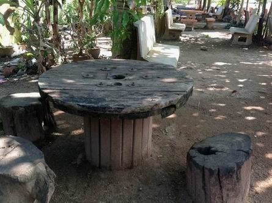
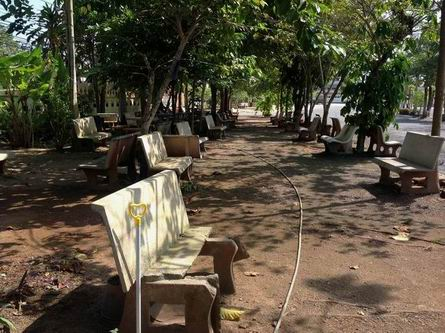
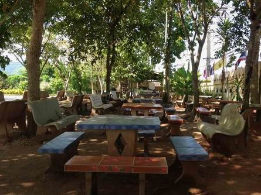
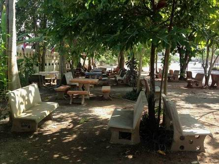

|
เนื่องจากวัดท่าไทรของเรา เป็นวัดใหญ่
เป็นสูนย์กลางของการบริหารกิจการคณะสงฆ์ของจังหวัดสุราษฎร์ธานี
เป็นวัดที่มีชื่อเสียงโด่งดัง เป็นที่รู้จักของประชาชนโดยทั่วไป
มีหลวงพ่อชมที่ศักดิ์สิทธิ์ที่คนมาขอพรและแก้บนอยู่มิขาดสาย เป็นวัดซึ่งเจ้าอาวาสมีเมตตากรุณา
โอบอ้อมอารี และเป็นที่เคารพนับถือของพระสงฆ์และประชาชนโดยทั่วไป
มีข้าราชการ พ่อค้า ประชาชนมาขอความช่วยเหลือ ขอคำแนะนำ ปรึกษาหารือ
มาให้ท่านปัดเป่าทุกข์อยู่ไม่ขาดสาย ที่สำคัญอยู่ติดกับถนนสายหลัก
จึงมีผู้คนที่สัญจรผ่านไปมาแวะพักผ่อนหย่อนใจ ไหว้หลวงพ่อชม นมัสการท่านเจ้าคุณเจ้าอาวาส
บางครั้งอาจต้องนั่งรอ และอาจต้องนั่งพักเพื่อพักผ่อนหย่อนใจ ผ่อนคลายอิริยาบถ
ดังนั้น จึงได้จัดสร้างที่นั่งไว้ใต้ร่วมไม้ซึ่งเป็นสถานที่นั่งพักผ่อนหย่อนใจในวัด.ใกล้ถนน.
ปัจจุบันที่จัดนี้ มีโต๊ะ จำนวน ๑๗ ชุด และม้านั่งหินอ่อนอีกมากมาย
ซึ่งตั้งไว้ใต้ร่มไม้ บรรยากาศดี เพื่อพักผ่อนหย่อนใจ อ่านหนังสือ
พบปะพูดคุย ทำกิจกรรมแก่ผู้ที่สัญจรผ่านไปมา.. ในภาพเป็นโครงการโดย
พระมหาบุญโฮม ผู้ช่วยเจ้าอาวาส ได้บอกบุญจากญาติโยมผู้มีจิตศรัทธา
โดยความเห็นชอบของ พระเดชพระคุณ พระเทพพิพัฒนาภรณ์ เจ้าอาวาสวัดท่าไทร
ปจจุบัน มีผู้คนทั้งใกล้และไกล มาใช้บริการ พักผ่อนหย่อนใจ พูดคุยปรึกษางาน
อ่านหนังสือ ฯลฯ เป็นจำนวนมาก จึงทำให้บางครั้ง ไม่เพียงพอแก่การใช้งานของประชาชนที่มาใช้บริการ
|

|
|

|
|
โต๊ะแบบนี้ก็แจ่ม
|
|
โต๊ะ/ม้านั่งแบบนี้ก็นั่งสบายในบรรยากาศใต้ร่มไม้
|
|

|
|

|
|
จะอ่านหนังสือก็ได้
นั่งคุยปรึกษาหารืองานกันก็สะดวกสบาย
|
|
มุมนี้
อากาศดี นั่งสบาย ลองมาใช้บริการดูนะครับ
|
ขณะนี้ กำลังมีโครงการจะปลูกต้นราชพฤกษ์
(ที่สูงไม่ต่ำกว่า ๑ เมตร เพื่อให้โตเร็วและทันต่อการใช้งาน) เพื่อเพิ่มพื้นที่ป่าและเพื่อให้ประชาชนพุทธริษัทได้
"ชมดอกราชพฤกษ์บานในงานสรงน้ำหลวงพ่อชม"
และเพิ่มโต๊ะหินอ่อนดังที่เห็น หากท่านใดมีความประสงค์จะร่วมกันพฒนาวัดท่าไทรของเรา
ให้เป็นอารามที่มากกว่านี้ เพื่อให้เป็นสมบัติของวัดเรา และให้ลูกหลาน
ญาติพี่น้องของเราได้ใช้ประโยชน์อย่างเต็มที่ สามารถแจ้งความประสงค์ได้ที่
พระดชพระคุณ พระเทพพิพัฒนาภรณ์ เจ้าอาวาสวัดท่าไทร หรือที่ พระมหาบุญโฮม
ปริปุณฺณสีโล ผู้ช่วยเจ้าอาวาสวัดท่าไทร ได้เลยนะครับ

กลับไปหน้า
Web วัดท่าไทร
ไป Web สำนักงานเจ้าคณะภาค
๑๖
ไป
Web ศูนย์พัฒนาคุณธรรมภาคใต้
ไป
Web วิทยุชุมชนตำบลท่าทองใหม่
ไป Web ชมรมวีอาร์ร้อยเกาะสุราษฎร์ธานี
|